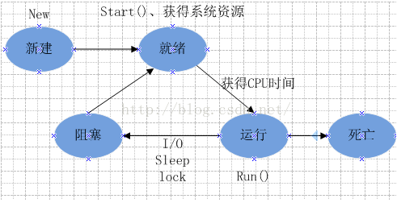

概念与区别
从本质上来说，一个进程就是一个正在执行的程序，它是系统进行资源分配和调度的基本单位，是操作系统结构的基础。每个进程都有自己的地址空间，包括可执行程序，程序的数据，栈，一组寄存器（程序计算器，栈指针以及其他运行程序需要的信息
线程有时被称为轻量级进程，是程序执行的最小执行流，它是进程的一个实体，是系统独立调度和分派的基本单位
进程和线程的区别：
- 地址空间：同一进程的线程共享本进程的地址空间，而进程之间则是独立的地址空间。
- 资源拥有：同一进程内的线程共享本进程的资源如内存、I/O、cpu等，但是进程之间的资源是独立的。进程切换时，消耗的资源大，效率高。所以涉及到频繁的切换时，使用线程要好于进程。同样如果要求同时进行并且又要共享某些变量的并发操作，只能用线程不能用进程
- 执行过程：每个独立的进程程有一个程序运行的入口、顺序执行序列和程序入口。但是线程不能独立执行，必须依存在应用程序中，由应用程序提供多个线程执行控制。
- 线程是处理器调度的基本单位，但是进程不是。
- 两者均可并发执行。
进程
进程的创建和终止
进程的创建主要有四个原因：系统初始化，正在运行的进程执行了创建进程的系统调用，用户请求创建一个进程以及批处理作业的初始化。
常见的就是一个进程调用了fork()函数创建新的进程。
进程终止的一些原因：工作完成正常退出，出错退出，严重错误，被其他进程杀死。
进程的状态和控制原语
进程有三种状态：运行态，阻塞态，就绪态。这三种状态的转换是：
就绪：当一个进程获得了除处理机以外的一切所需资源，一旦得到处理机即可运行，则称此进程处于就绪状态。
阻塞：也称为等待或睡眠状态，一个进程正在等待某一事件发生（例如请求I/O而等待I/O完成等）而暂时停止运行，这时即使把处理机分配给进程也无法运行，故称该进程处于阻塞状态。
运行：当一个进程在处理机上运行时，则称该进程处于运行状态。
注意不可能存在直接从阻塞态转换到执行态。
除了这三个基本状态还有一个挂起状态，新建状态，终止状态。
引起挂起状态的原因：终端用户的请求，父进程请求，负荷调节的需要，操作系统的需要。
用于控制进程的原语有：
创建原语（
Create）：创建一个就绪状态的进程，使进程从创建状态变迁为就绪状态。阻塞原语（
Block）：使进程从执行状态变迁为阻塞状态。唤醒原语（
Wakeup）：使进程从阻塞状态变迁为就绪状态。挂起原语（
Suspend）：将指定的进程或处于阻塞的进程挂起
Java的Runnable状态与操作系统中进程运行状态的关系
RUNNABLE 状态对应了传统的 ready，running 以及部分的 waiting状态，也就是上面的三种状态，但是操作体系中其实是有五种状态的。

进程间通信
每个进程各自有不同的用户地址空间,任何一个进程的全局变量在另一个进程中都看不到，所以进程之间要交换数据必须通过内核,在内核中开辟一块缓冲区,进程A把数据从用户空间拷到内核缓冲区,进程B再从内核缓冲区把数据读走,内核提供的这种机制称为进程间通信。
管道
管道是由调用pipe函数来创建
1 |
|
实现进程通信的方式
- 父进程创建管道，得到两个⽂件描述符指向管道的两端
- 父进程
fork出子进程，⼦进程也有两个⽂件描述符指向同⼀管道。 - 父进程关闭
fd[0],子进程关闭fd[1]，即⽗进程关闭管道读端,⼦进程关闭管道写端（因为管道只支持单向通信）。⽗进程可以往管道⾥写,⼦进程可以从管道⾥读,管道是⽤环形队列实现的,数据从写端流⼊从读端流出,这样就实现了进程间通信。
管道读取数据的几种情况：
- 读端不读，写端一直写
- 写端不写，但是读端一直读
- 读端一直读，且
fd[0]保持打开，而写端写了一部分数据不写了，并且关闭fd[1]。 - 读端读了一部分数据，不读了且关闭
fd[0]，写端一直在写且fd[1]还保持打开状态。
对应的处理：
- 如果一个管道的写端一直在写，而读端的引⽤计数是否⼤于0决定管道是否会堵塞，引用计数大于0，只写不读再次调用
write会导致管道堵塞； - 如果一个管道的读端一直在读，而写端的引⽤计数是否⼤于0决定管道是否会堵塞，引用计数大于0，只读不写再次调用
read会导致管道堵塞； - 而当他们的引用计数等于0时，只写不读会导致写端的进程收到一个
SIGPIPE信号，导致进程终止，只写不读会导致read返回0,就像读到⽂件末尾⼀样。
管道的特点：
- 管道只允许具有血缘关系的进程间通信，如父子进程间的通信。
- 管道只允许单向通信。
- 管道内部保证同步机制，从而保证访问数据的一致性。
- 面向字节流
- 管道随进程，进程在管道在，进程消失管道对应的端口也关闭，两个进程都消失管道也消失。
信号量
信号量本质上是一个计数器（不设置全局变量是因为进程间是相互独立的，而这不一定能看到，看到也不能保证++引用计数为原子操作）,用于多进程对共享数据对象的读取，它和管道有所不同，它不以传送数据为主要目的，它主要是用来保护共享资源（信号量也属于临界资源），使得资源在一个时刻只有一个进程独享。
工作原理：
由于信号量只能进行两种操作等待和发送信号，即P(sv)和V(sv),他们的行为是这样的：
P(sv)：如果sv的值大于零，就给它减1；如果它的值为零，就挂起该进程的执行V(sv)：如果有其他进程因等待sv而被挂起，就让它恢复运行，如果没有进程因等待sv而挂起，就给它加1.
在信号量进行PV操作时都为原子操作（单条指令的执行是不会被打断的，因为它需要保护临界资源）
与信号量相关的函数：
1 | // 创建信号量,返回:成功返回信号集ID，出错返回-1 |
消息队列
消息队列是消息的链接表，存放在内核中并由消息队列标识符标识。 用户可以从消息队列中读取数据和添加消息，其中发送进程添加消息到队列的末尾，接收进程在队列的头部接收消息，消息一旦被接收，就会从队列中删除。
消息队列常用的一些函数有：
msgget创建或者打开消息队列，msgsnd添加消息，msgrcv读取消息，msgctl控制消息队列，ftok由于文件路径工程ID生成的标准key。
共享内存
共享内存就是允许两个或多个进程共享一定的存储区。就如同malloc() 函数向不同进程返回了指向同一个物理内存区域的指针。当一个进程改变了这块地址中的内容的时候，其它进程都会察觉到这个更改。因为数据不需要在客户机和服务器端之间复制，数据直接写到内存，不用若干次数据拷贝。
但是共享内存没有任何的同步与互斥机制，所以要使用信号量来实现对共享内存的存取的同步
共享内存的涉及到的函数：
1 | // 创建共享内存,成功返回共享内存的ID,出错返回-1 |
共享内存优缺点：
优点：我们可以看到使用共享内存进行进程间的通信真的是非常方便，而且函数的接口也简单，数据的共享还使进程间的数据不用传送，而是直接访问内存，也加快了程序的效率。同时，它也不像匿名管道那样要求通信的进程有一定的父子关系。
缺点：共享内存没有提供互斥同步的机制，这使得我们在使用共享内存进行进程间通信时，往往要借助其他的手段比如信号量等来进行进程间的同步工作。
为什么需要进程间通信
进程是一个独立的资源分配单元，不同进程（这里所说的进程通常指的是用户进程）之间的资源是独立的，没有关联，不能在一个进程中直接访问另一个进程的资源（例如打开的文件描述符）但是，进程不是孤立的，不同的进程需要进行信息的交互和状态的传递等，因此需要进程间通信
进程间通信的目的：
- 数据传输：一个进程需要将它的数据发送给另一个进程。
- 通知事件：一个进程需要向另一个或一组进程发送消息，通知它（它们）发生了某种事件（如进程终止时要通知父进程）。
- 资源共享：多个进程之间共享同样的资源。为了做到这一点，需要内核提供互斥和同步机制。
- 进程控制：有些进程希望完全控制另一个进程的执行（如
Debug进程），此时控制进程希望能够拦截另一个进程的所有陷入和异常，并能够及时知道它的状态改变。
线程间通信
同步
指多个线程通过Synchronized关键字这种方式来实现线程间的通信。
比方说由于线程A和线程B持有同一个MyObject类的对象object，尽管这两个线程需要调用不同的方法，但是它们是同步执行的，比如：线程B需要等待线程A执行完了methodA()方法之后，它才能执行methodB()方法。这样，线程A和线程B就实现了通信。
这种方式，本质上就是“共享内存”式的通信。多个线程需要访问同一个共享变量，谁拿到了锁（获得了访问权限），谁就可以执行。
while轮询的方式
参考：Java多线程通信方式
wait/notify机制
通过进程调用对应的函数，通知对应另外的线程从而实现线程的通信。
比方说当条件未满足时，线程A调用wait()放弃CPU，并进入阻塞状态，当条件满足时，线程B调用 notify()通知线程A，所谓通知线程A，就是唤醒线程A，并让它进入可运行状态。
进程同步
进程同步是一个操作系统级别的概念,是在多道程序的环境下，存在着不同的制约关系，为了协调这种互相制约的关系，实现资源共享和进程协作，从而避免进程之间的冲突，引入了进程同步。 比如说进程A需要从缓冲区读取进程B产生的信息，当缓冲区为空时，进程B因为读取不到信息而被阻塞。而当进程A产生信息放入缓冲区时，进程B才会被唤醒。
临界资源
在操作系统中，进程是占有资源的最小单位，但对于某些资源来说，其在同一时间只能被一个进程所占用。这些一次只能被一个进程所占用的资源就是所谓的临界资源。典型的临界资源比如物理上的打印机
对于临界资源的访问，必须是互诉进行。也就是当临界资源被占用时，另一个申请临界资源的进程会被阻塞，直到其所申请的临界资源被释放。而进程内访问临界资源的代码被成为临界区。
对于临界区的访问过程分为四个部分：
- 进入区:查看临界区是否可访问，如果可以访问，则转到步骤二，否则进程会被阻塞
- 临界区:在临界区做操作
- 退出区:清除临界区被占用的标志
- 剩余区：进程与临界区不相关部分的代码
进程互斥
进程互斥是进程之间的间接制约关系。当一个进程进入临界区使用临界资源时，另一个进程必须等待。只有当使用临界资源的进程退出临界区后，这个进程才会解除阻塞状态。
比如进程 B 需要访问打印机，但此时进程 A 占有了打印机，进程 B 会被阻塞，直到进程 A 释放了打印机资源,进程B 才可以继续执行。
实现临界区互斥的基本方法
- 通过硬件实现临界区最简单的办法就是关 CPU 的中断
- 信号量实现：常见的 P，V 操作
进程同步与进程通信区别
- 进程同步：控制多个进程按一定顺序执行；
- 进程通信：进程间传输信息。
进程通信是一种手段，而进程同步是一种目的。也可以说，为了能够达到进程同步的目的，需要让进程进行通信，传输一些进程同步所需要的信息。